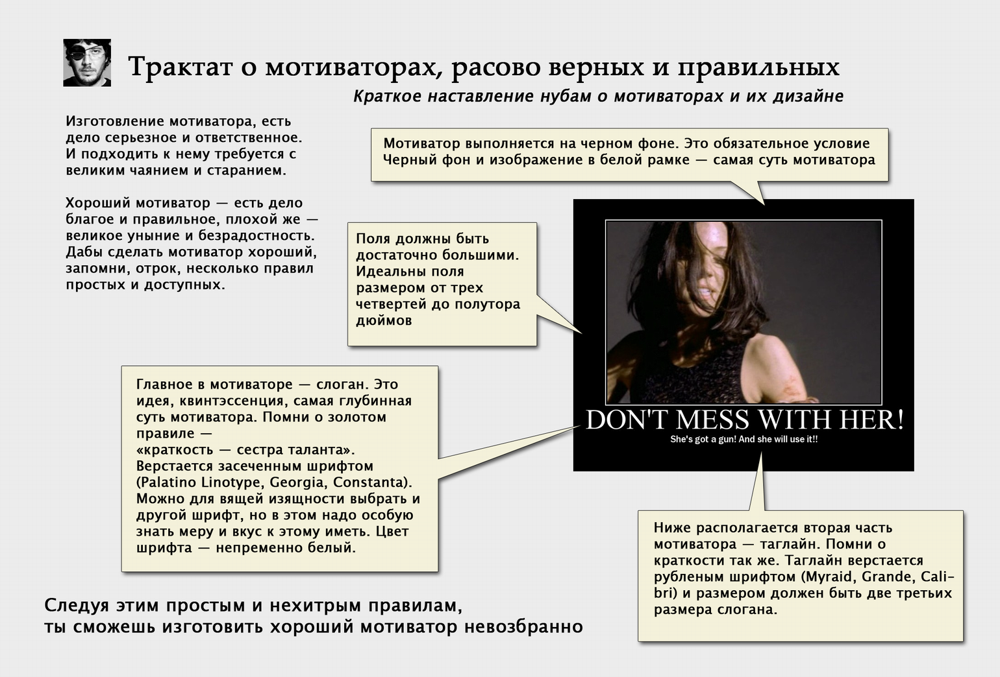
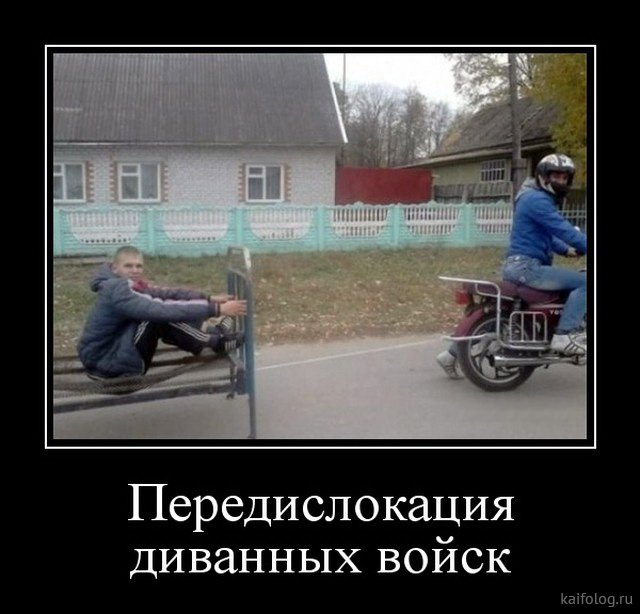
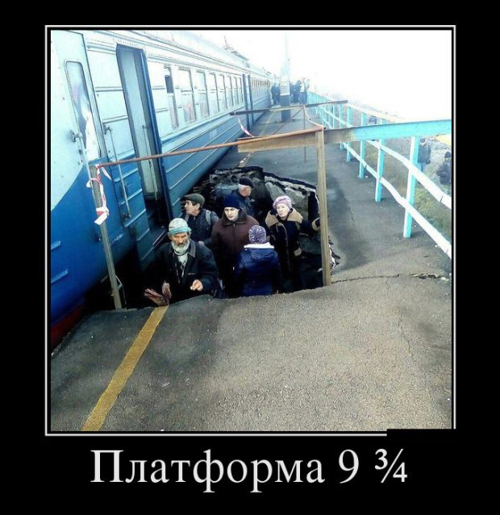

Демотиваторы
Примерно начиная с этой статьи мы переходим непосредственно к теме сайта - классификации мемов. Первая категория - демотиваторы. Эти мемы одни из древнейших и помнят о них лишь ваши родители. Демотивационный постер — изображение, состоящее из картинки в рамке и комментирующей её надписи, составленной по достаточно строгому канону. Прежде всего надо уяснить, что демотиватор — это не «прикольная картинка со смешной подписью» или вброс, а грустное и иногда философское макро для нытиков.Изначально демотивационные постеры появились как пародия на мотивационные постеры (они же мотиваторы, советские агитки - типичный пример мотиватора) — популярный в США и СССР вид наглядной агитации, долженствующий создавать сообразное настроение в школах, университетах, на рабочих местах, диспансерах для неизлечимо больных и в тюрьмах. Позже в эти безобидные картинки в рамочках стали пихать всё, что душеньке угодно.  Руководство от величайшего дизайнера всея Руси - Артемия Лебедева.
В силу своего преклонного возраста, демотиваторы особенно сильно подвержены забаяниванию. Как вы могли заметить, такие мемы стали встречаться всё реже и реже. Принято считать, что этот жанр полностью себя изжил, завершив полный цикл развития, однако, кто знает...
Немного демотиваторов для вас: 
Немного перекочевавшей постиронии.
